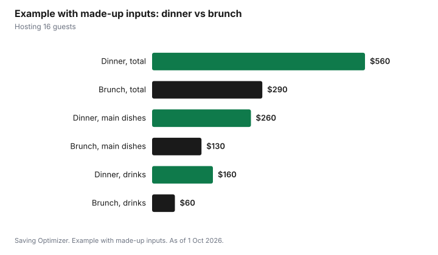

Events · Canada
A Holiday Open House or Brunch Instead of a Full Dinner: What It Saves

Hosting a holiday brunch or a drop-in open house instead of a full dinner usually costs less for the same guest list. Breakfast staples such as eggs, bread, potatoes and fruit tend to cost less per person than a roast with several sides, a brunch has fewer courses, guests usually drink less in the late morning, and the party ends by mid-afternoon. An open house spreads guests across a few hours, so you can serve more people from a smaller table. Plan one centrepiece dish, a few make-ahead sides, coffee and one special drink. Keep food safe: Health Canada says cooked food should not sit at room temperature for more than two hours.
Key takeaways
- Brunch uses cheaper staples and fewer courses than a full holiday dinner.
- An open house spreads guests over a few hours, so you need less seating and less food out at once.
- Plan one centrepiece (a strata, a baked ham or a frittata) plus make-ahead sides.
- Drinks: coffee, tea, juice and one punch or sparkling option go further than an evening bar.
- Food safety: discard cooked food left out more than two hours; keep it out of 4°C to 60°C.
- Example with made-up inputs: dinner for 16 at $560 compared with brunch for 16 at $290.
Why brunch costs less
The savings come from four places. None of them depends on a particular store or price, so they apply whatever you pay for groceries.
| Cost driver | Full dinner | Brunch or open house |
|---|---|---|
| Main protein | Large roast or bird | Eggs, a smaller ham, or none |
| Courses | Starter, main, several sides, dessert | One table of dishes at once |
| Drinks | Evening bar, wine with dinner | Coffee, juice, one punch |
| Length | Evening into night | Late morning to early afternoon |
| Seating | A chair per guest at one time | Guests come and go; fewer seats needed |
| Leftovers | Often a lot | Easier to size |
There are also savings that are harder to count. Many people find a brunch less tiring to host, and family members with young children or early bedtimes often prefer a daytime gathering.
Menu
Build the menu around one centrepiece and a few easy dishes that can be made the day before. Brunch dishes hold well, which matters for an open house where people arrive at different times.
| Course | Make-ahead options | Notes |
|---|---|---|
| Centrepiece | Breakfast strata, baked French toast, frittata, glazed ham | Assemble the day before; bake in the morning |
| Potatoes or grains | Roasted potatoes, hash brown casserole | Reheats well |
| Breads | Muffins, scones, bagels, cinnamon buns | Bake ahead or buy from a bakery |
| Fruit | Fruit salad, a platter of citrus | Seasonal fruit costs less |
| Something green | Simple salad | Balances a rich table |
| Sweet | Cookies already baked for the season | Skip a separate dessert course |
Buy in quantity where it helps: a large tray of eggs, a big bag of potatoes and a bulk pack of berries for baking are usually cheaper per unit. Compare unit prices in your store's flyer.
Timing and headcount
An open house invites guests to drop in at any time during a window, for example 11 a.m. to 2 p.m. Not everyone will be there at once, so plan food for the peak, not for the total. A rough planning approach is to assume the busiest hour will have a share of the guest list, then top up dishes from the kitchen as people come and go.
- Choose a window of about three hours.
- Put the window on the invitation so guests know it is a drop-in.
- Set out half the food at the start and refill from the oven or fridge.
- Keep hot food in the oven at a low setting and cold food in the fridge until it goes out.
- Ask for replies so you have a rough headcount.
Food safety
A drop-in party leaves food out for hours, which is exactly the situation food safety rules address. Health Canada says to keep food out of the danger zone between 4°C (40°F) and 60°C (140°F), to throw away cooked food left at room temperature for more than two hours, and to reheat leftovers to an internal temperature of 74°C (165°F). Put out smaller dishes and replace them, rather than leaving one big dish out all afternoon. Refrigerate leftovers promptly in shallow containers.
| Rule | Health Canada guidance |
|---|---|
| Danger zone | Between 4°C (40°F) and 60°C (140°F) |
| Time out | Discard cooked food left at room temperature for more than two hours |
| Leftovers | Refrigerate promptly in shallow containers; eat within 2 to 3 days or freeze |
| Reheating | To a safe internal temperature of 74°C (165°F) |
Drinks
Brunch drinks cost less because the mainstays are coffee, tea and juice. If you want something festive, choose one: a punch, a sparkling wine with orange juice, or a non-alcoholic sparkling option. One special drink costs less than stocking a bar. If you serve alcohol, the Canadian Centre on Substance Use and Addiction defines a standard drink as 142 ml of 12% wine, which helps estimate bottles; see how much alcohol to buy for a party.
Making a brunch feel like an occasion
Some hosts worry that a brunch will feel like less of an event than a dinner. Small touches close the gap at little cost: a tablecloth and candles even in daylight, music, a printed or handwritten menu card, a self-serve hot chocolate or coffee bar, and a short toast at the busiest moment. A brunch also suits activities that do not work at night, such as a walk to see neighbourhood lights afterwards, a children's craft table, or a gift exchange with a cap. If your family's main tradition is a big dinner, a brunch can be the second gathering of the season rather than a replacement, which takes pressure off the dinner guest list.
Example with made-up inputs: dinner or brunch for 16
These numbers are an example with made-up inputs. They are not store prices. A host compares a sit-down dinner for 16 with a brunch open house for the same list. The dinner: a roast and sides $260, starter and dessert $90, wine and drinks $160, and extra chairs and tableware $50, for $560. The brunch: strata, ham and potatoes $130, breads and fruit $70, coffee, juice and one punch $60, and supplies $30, for $290.
| Line | Dinner | Brunch open house |
|---|---|---|
| Main dishes | $260 | $130 |
| Starter, dessert or breads and fruit | $90 | $70 |
| Drinks | $160 | $60 |
| Rentals and supplies | $50 | $30 |
| Total | $560 | $290 |
| Per guest | $35 | About $18 |

Plan
- Choose the date and a three-hour window; send invitations that say drop-in.
- Pick one centrepiece and three or four make-ahead dishes.
- Shop two days before; assemble dishes the day before.
- Bake in the morning and set out half of each dish.
- Refill from the kitchen and remove anything that has been out two hours.
- Refrigerate leftovers promptly.
For a full dinner instead, see the Christmas dinner budget. For a larger evening party, use the holiday party hosting budget.
Sources
- Health Canada, Food safety tips for leftovers and Safe food handling at home, canada.ca (archived copies captured 25 Aug and 28 Sep 2026), as of 1 Oct 2026. Danger zone 4°C to 60°C; two-hour rule; leftovers within 2 to 3 days; reheat to 74°C.
- Canadian Centre on Substance Use and Addiction, Know Your Standard Drink, ccsa.ca, as of 1 Oct 2026. 142 ml of 12% wine.
- The menu and timing tables are planning tools written for this guide.
- The dinner and brunch amounts, table and chart are an example with made-up inputs.
Frequently asked questions
Is a brunch cheaper to host than a dinner?
Usually. Breakfast staples cost less than a roast with several sides, there are fewer courses, drinks are mostly coffee and juice, and the party is shorter. In a made-up example, 16 guests cost $560 for dinner and $290 for brunch.
How much food do I need for an open house?
Plan for the busiest hour rather than the full guest list, since guests come and go. Set out half of each dish at the start and refill from the kitchen.
How long can brunch food sit out?
Health Canada says to throw away cooked food left at room temperature for more than two hours and to keep food out of the danger zone between 4°C and 60°C.
What time should a holiday open house be?
Choose a window of about three hours, such as late morning to early afternoon, and say on the invitation that guests can drop in at any time during it.
What drinks should I serve at a holiday brunch?
Coffee, tea and juice, plus one festive option such as a punch or a sparkling drink with or without alcohol. One special drink costs less than stocking a bar.
Researched and drafted with AI assistance and fact-checked against official Canadian sources. How we create content.